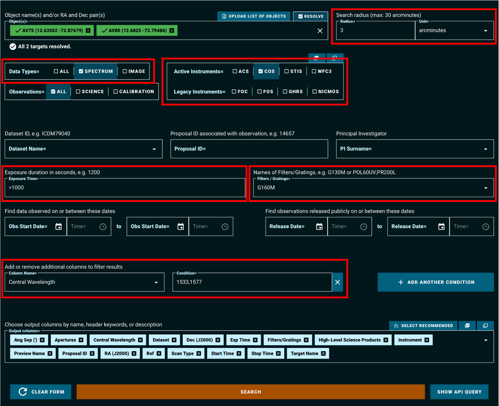
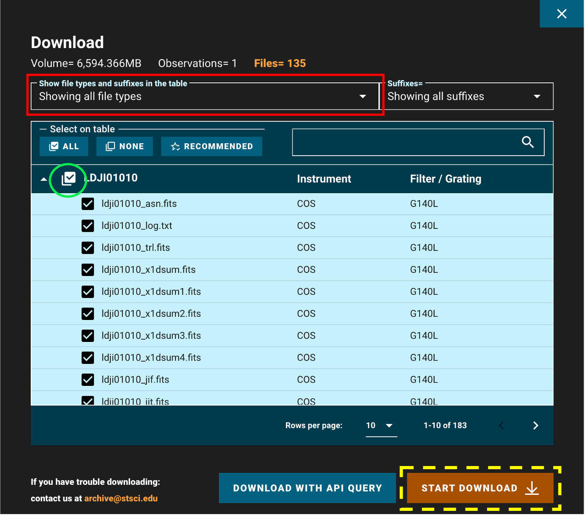
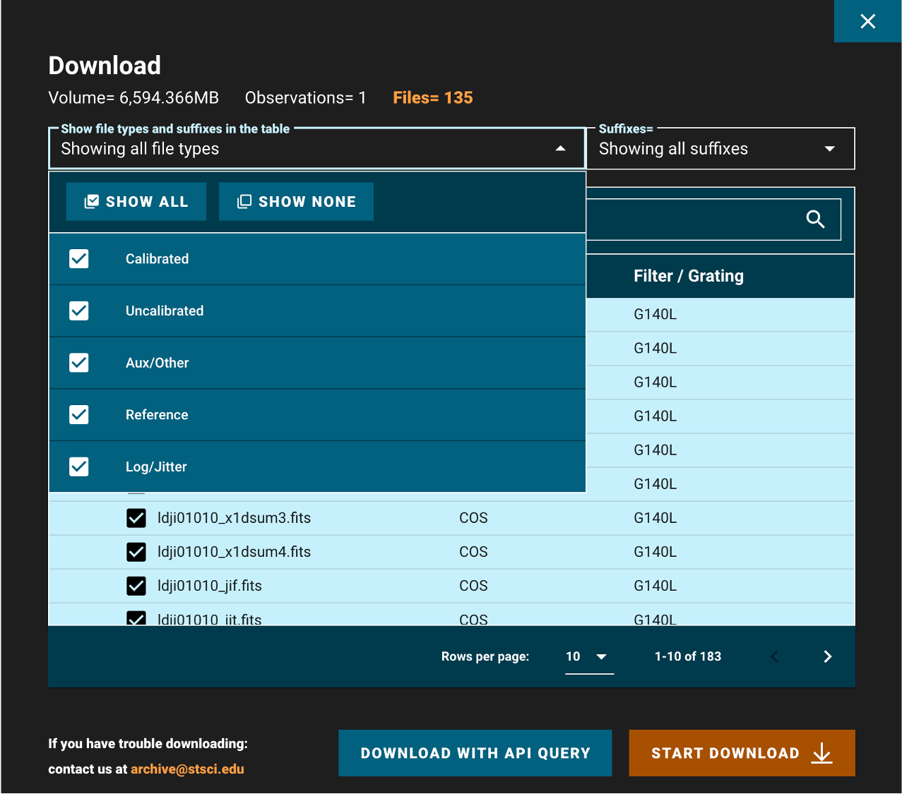

Downloading COS Data#
Learning Goals#
This Notebook is designed to walk the user (you) through: Downloading existing Cosmic Origins Spectrograph (COS) data from the online archive
0. Introduction
- 0.1. Choosing how to access the data
- 0.2. A one-cell summary of this Notebook’s key points
1. Using the web browser interface
- 1.1. The HST-specific Web Search
- 1.2. Searching for a Series of Observations on the HST-specific Web Search
- 1.3. The MAST Portal
- 1.4. Searching for a Series of Observations on the MAST Portal
2. Using the Python module Astroquery
- 2.1. Searching for a single source with Astroquery
- 2.2. Narrowing Search with Observational Parameters
- 2.3. Choosing and Downloading Data Products
- 2.4. Using astroquery to find data on a series of sources
0. Introduction#
The Cosmic Origins Spectrograph (COS) is an ultraviolet spectrograph on-board the Hubble Space Telescope (HST) with capabilities in the near ultraviolet (NUV) and far ultraviolet (FUV).
This tutorial aims to prepare you to access the existing COS data of your choice by walking you through downloading a processed spectrum, as well as various calibration files obtained with COS.
For an in-depth manual to working with COS data and a discussion of caveats and user tips, see the COS Data Handbook.
For a detailed overview of the COS instrument, see the COS Instrument Handbook.
0.1. Choosing how to access the data#
This Notebook explains three methods of accessing COS data hosted by the STScI Mikulski Archive for Space Telescopes (MAST). You may read through all three, or you may wish to focus on a particular method which best suits your needs. Please use the table below to determine which section on which to focus.
- User-friendly point-and-click searching |
- User-friendly point-and-click searching |
- Requires a bit of |
|
- Advanced mission-specific search parameters, including: central wavelength, detector, etc. |
- Lacks some mission-specific search parameters but has non-HST data |
- Allows for programmatic searching and downloads |
|
- Easy to select and download specific datasets |
- Easy to select and download specific datasets |
- Best for downloading very large datasets |
|
Use this method if… |
…You’re unfamiliar with |
…You’re exploring the data from multiple observatories and you don’t need to search by cenwave |
…You know |
Described in… |
Section 1.1 |
Section 1.3 |
Section 2.1 |
Note that these are only recommendations, and you may prefer another option. For most purposes, the writer of this tutorial recommends exploring your data first with one of the Web interfaces. Then, if repeatability is important to your application, you can implement this using the Astroquery Python interface.
0.2. A one-cell summary of this Notebook’s key points:#
While the rest of this Notebook will walk you through each step and decision made when downloading COS data, the following code cell serves as a summary for the Notebook. It contains the key material condensed into a single code cell, without much explanation. In the rest of this Notebook, we explain other methods of downloading data which require less Python experience and which may be more useful for exploring data when you don’t know exactly what you’re looking for.
If this cell is all the help you need, great! If you still have questions, read on!
# 1. Import the necessary libraries:
# For searching and downloading from the MAST archive:
from astroquery.mast import Observations
# For handling system paths:
from pathlib import Path
# 2. Download an example dataset using astroquery:
# 2.1. Find all the observations from a single HST Proposal:
# We'll search for a program with Proposal ID 15366
# A list of search criteria can be found by running:
# Observations.get_metadata('observations')
obs_from_proposal = Observations.query_criteria(proposal_id="15366")
# 2.2. Find all the data products for these observations:
# These include all the files associated with your observation
products_from_proposal = Observations.get_product_list(obs_from_proposal)
# 2.3. Tell the user how many total files were found:
print(f"Found {len(products_from_proposal)} data products")
# 2.4. Filter to a specific subset of these products:
# Here we filter X1DSUM files, which are the final 1-D extracted spectra
# and association files, which list related exposures combined into the X1DSUM
products_to_download = Observations.filter_products(
products_from_proposal,
productSubGroupDescription=["X1DSUM", "ASN"]
)
# 2.5. Download the filtered products:
dl_table = Observations.download_products(products_to_download)
# 2.6. Gather the downloaded files:
# Turn string paths to the files into python pathlib.Path objects
# Then make lists of these local paths, aggregated by type of file
onecell_x1dsum_products = [Path(local_path) for local_path in
dl_table["Local Path"] if "x1dsum" in local_path]
onecell_asn_products = [Path(local_path) for local_path in
dl_table["Local Path"] if "asn" in local_path]
print("Downloaded X1DSUM Files: \n", onecell_x1dsum_products,
"\nDownloaded ASN Files: \n", onecell_asn_products)
Found 587 data products
Downloading URL https://mast.stsci.edu/api/v0.1/Download/file?uri=mast:HST/product/ldm701010_x1dsum.fits to ./mastDownload/HST/ldm701010/ldm701010_x1dsum.fits ...
[Done]
Downloading URL https://mast.stsci.edu/api/v0.1/Download/file?uri=mast:HST/product/ldm701010_asn.fits to ./mastDownload/HST/ldm701010/ldm701010_asn.fits ...
[Done]
INFO: Found cached file ./mastDownload/HST/ldm701010/ldm701010_asn.fits with expected size 11520. [astroquery.query]
INFO: Found cached file ./mastDownload/HST/ldm701010/ldm701010_x1dsum.fits with expected size 1811520. [astroquery.query]
Downloading URL https://mast.stsci.edu/api/v0.1/Download/file?uri=mast:HST/product/ldm701020_x1dsum.fits to ./mastDownload/HST/ldm701020/ldm701020_x1dsum.fits ...
[Done]
Downloading URL https://mast.stsci.edu/api/v0.1/Download/file?uri=mast:HST/product/ldm701020_asn.fits to ./mastDownload/HST/ldm701020/ldm701020_asn.fits ...
[Done]
INFO: Found cached file ./mastDownload/HST/ldm701020/ldm701020_asn.fits with expected size 11520. [astroquery.query]
INFO: Found cached file ./mastDownload/HST/ldm701020/ldm701020_x1dsum.fits with expected size 1811520. [astroquery.query]
Downloading URL https://mast.stsci.edu/api/v0.1/Download/file?uri=mast:HST/product/ldm701030_asn.fits to ./mastDownload/HST/ldm701030/ldm701030_asn.fits ...
[Done]
Downloading URL https://mast.stsci.edu/api/v0.1/Download/file?uri=mast:HST/product/ldm701030_x1dsum.fits to ./mastDownload/HST/ldm701030/ldm701030_x1dsum.fits ...
[Done]
INFO: Found cached file ./mastDownload/HST/ldm701030/ldm701030_x1dsum.fits with expected size 1811520. [astroquery.query]
INFO: Found cached file ./mastDownload/HST/ldm701030/ldm701030_asn.fits with expected size 11520. [astroquery.query]
Downloaded X1DSUM Files:
[PosixPath('mastDownload/HST/ldm701010/ldm701010_x1dsum.fits'), PosixPath('mastDownload/HST/ldm701010/ldm701010_x1dsum.fits'), PosixPath('mastDownload/HST/ldm701020/ldm701020_x1dsum.fits'), PosixPath('mastDownload/HST/ldm701020/ldm701020_x1dsum.fits'), PosixPath('mastDownload/HST/ldm701030/ldm701030_x1dsum.fits'), PosixPath('mastDownload/HST/ldm701030/ldm701030_x1dsum.fits')]
Downloaded ASN Files:
[PosixPath('mastDownload/HST/ldm701010/ldm701010_asn.fits'), PosixPath('mastDownload/HST/ldm701010/ldm701010_asn.fits'), PosixPath('mastDownload/HST/ldm701020/ldm701020_asn.fits'), PosixPath('mastDownload/HST/ldm701020/ldm701020_asn.fits'), PosixPath('mastDownload/HST/ldm701030/ldm701030_asn.fits'), PosixPath('mastDownload/HST/ldm701030/ldm701030_asn.fits')]
Now, returning to our more detailed walkthrough…#
We will define a few directories in which to place our data.
And to create new directories, we’ll import pathlib.Path:
# Import for: working with system paths
from pathlib import Path
# This will be an important directory for the Notebook, where we save data
data_dir = Path('./data/')
# If directory doesn't exist, it'll be created
data_dir.mkdir(exist_ok=True)
1. Downloading the data through the browser interface#
One can search for COS data from both a browser-based Graphical User Interface (gui) and a Python interface. This Section will examine two web interfaces. Section 2 will explain the Python interface.
Note, there are other, more specialized ways to query the mast API not discussed in this Notebook. An in-depth MAST API tutorial can be found here.
1.1 The HST-specific Web Search#
The browser GUI for searching specifically through HST archival data can be found here. Full documentation of the HST-specific search can be found here. In this section of the Notebook, we’ll show examples of searching for COS data using the HST-specific form. A more general MAST GUI, which allows access to data from other telescopes such as TESS, but does not offer all HST-specific search parameters, will be discussed in Section 1.3.
The search page of the HST-specific interface is laid out as in Figure 1.1:
Fig 1.1#

If you are accessing proprietary data, you will need to make an account or log in at the top right under “MY ST” (Fig 1.1, boxed in red). If you are accessing non-proprietary data, you may continue without logging in.
Figure 1.2 shows a filled-in search form, which will query the MAST archive for observations which:
Fall within 3 arcminutes of either of the resolved stars: AV75 or AV80
Are spectroscopic observations, rather than images
Have exposure times of greater than 1000 seconds
Are taken with the COS instrument, using the G160M grating and either the 1533 or the 1577 cenwave setting
Fig 1.2#
{kind=link}
The above search results in the table shown in Figure 1.3.
Fig 1.3#

If you need to change some parameters in your search - for instance, to also find data from the G130M grating - click on “Edit Search” (Fig 1.3, red dashed box).
If you are happy with your search, you may now select all the observations whose data you would like to download. Do this by clicking on the checkbox for those observations (Fig 1.3, blue box), and then clicking “Download Data” (Fig 1.3, green oval).
Most COS spectra have preview images (simple plots of flux by wavelength) which can be viewed before downloading the data. Clicking the dataset name (Fig 1.3, blue dashed oval) will take you to a page which shows the preview image, as well as some basic information about the data and whether there were any known failures during the operation. An example of such a page is shown in Figure 1.4.
Fig 1.4#

Returning to the results page shown in Fig 1.3 and clicking “Download Data” opens a window as shown in Figure 1.5. In this window you can search for filetypes using the search bar, and unselect/select all the data products shown in the filtered list (Fig 1.5, green circle). Clicking the “Showing all filetypes” box (Figure 1.5, red box) shows a drop-down (Figure 1.6) where you can choose to show/hide certain types of data such as the uncalibrated data.
Fig 1.5#
{kind=link}
Fig 1.6#
{kind=link}
When all of your desired data products are checked, click “Start Download” (Fig 1.5, yellow dashed box). This will download a compressed “zipped” folder of all of your data, divided into subdirectories by the observation. Most operating systems can decompress these folders by default. For help decompressing the zipped files, you can follow these links for: Windows and Mac. There are numerous ways to do this on Linux, however we have not vetted them.
Let’s briefly return to the initial HST-specific search form to discuss another way to find data.
Rather than specifying parameters about the data we’re searching for, we can instead search by a dataset’s ID (Figure 1.7, pink box). As an example of this, we rather arbitrarily select LCXV13050 because of its long exposure time, taken under an observing program described as:
“Project AMIGA: Mapping the Circumgalactic Medium of Andromeda”
This is a Quasar known as 3C48, one of the first quasars discovered.
Fig 1.7#

Well done making it this far!
You can attempt the exercise below for some extra practice.
Exercise 1: Searching the archive for TRAPPIST-1 data#
TRAPPIST-1 is a cool red dwarf with a multiple-exoplanet system.
Find its coordinates using the SIMBAD Basic Search.
Use those coordinates in the HST web search or the MAST portal to find all COS exposures of the system.
Limit the search terms to find the COS dataset taken in the COS far-UV configuration with the grating G130M.
What is the dataset ID, and how long was the exposure?
Place your answer in the cell below.
# Your answer here
1.2. Searching for a Series of Observations on the HST-specific Web Search#
Now let’s try using the HST-specific web interface’s file upload form to search for a series of observations by their dataset IDs. We’re going to look for three observations of the same object, the white dwarf WD1057+719, taken with three different COS gratings. Two are in the FUV and one in the NUV. The dataset IDs are
LDYR52010
LBNM01040
LBBD04040
So that we have an example list of datasets to input to the web search, we make a comma-separated-value text file with these three obs_ids, and save it as obsId_list.txt.
You can also search by right ascension and declination, instead of by dataset ID.
# The three observation IDs we want to gather
obsIdList = ['LDYR52010', 'LBNM01040', 'LBBD04040']
# Open up this new file in "write" mode
with open('./obsId_list.txt', 'w') as f:
# The first line tells the search what type of parameter we're searching
# Here, it's the dataset ID.
# It could be RA, DEC. In that case each row has two values
f.write("Dataset_id\n")
# We want a newline after each obs_id except the last one
for obsId in obsIdList[:-1]:
f.write(obsId + "," + "\n")
# Make sure we don't end the file with a blank line (below)
f.write(obsIdList[-1])
Then we can click Upload List of Objects on the HST-specific search form, and then choose obsId_list.txt under the browse menu which opens (Figure 1.8, pink box).
Because we are searching by Dataset ID, we don’t need to specify any additional parameters to narrow down the data.
Fig 1.8#

We now can access all the datasets specified in obsId_list.txt, as shown in Figure 1.9:
Fig 1.9#

We can select and download their data products as before.
1.3. The MAST Portal#
STScI hosts another web-based gui for accessing data, the MAST Portal. This is a newer interface which hosts data from across many missions and allows the user to visualize the target in survey images, take quick looks at spectra or lightcurves, and manage multiple search tabs at once. Additionally, it handles downloads in a slightly more beginner-friendly manner than the current implementation of the Classic HST Search. This guide will only cover the basics of accessing COS data through the MAST Portal; you can find more in-depth documentation in the form of helpful video guides on the MAST YouTube Channel.
Let’s find the same data we found in Section 1.1, on the QSO 3C48:
Navigate to the MAST Portal at https://mast.stsci.edu/portal/Mashup/Clients/Mast/Portal.html, and you will be greeted by a screen where the top looks like Figure 1.10.
Fig 1.10#

Click on “Advanced Search” (boxed in red in Figure 1.10). This will open up a new search tab, as shown in Figure 1.11:
Fig 1.11#

Fig 1.11 (above) shows the default search fields which appear. Depending on what you are looking for, these may or may not be the most helpful search fields. By unchecking some of the fields which we are not interested in searching by right now (Figure 1.12, boxed in green), and then entering the parameter values by which to narrow the search into each parameter’s box, we generate Fig 1.12. One of the six fields (Mission) by which we are narrowing is boxed in a dashed blue line. The list of applied filters is boxed in red. A dashed pink box at the top left indicates that 2 records were found matching all of these parameters. To its left is an orange box around the “Search” button to press to bring up the list of results.
Here we are searching by:
Search Parameter |
Value |
|---|---|
Mission |
HST |
Instrument |
COS/FUV |
Filters |
G160M |
Target Name |
3C48 |
Observation ID |
LCXV* (the star is a “wild card” value, so the search will find any file whose |
Product Type |
spectrum |
Fig 1.12#

Click the “Search” button (boxed in orange), and you will be brought to a page resembling Figure 1.13.
Fig 1.13#

Above, in Fig 1.13:
The yellow box to the right shows the AstroView panel, where you can interactively explore the area around your target:
Click and drag to pan around
Scroll to zoom in/out
The dashed-blue box highlights additional filters you can use to narrow your search results.
The red box highlights a button you can click with some spectral datasets to pull up an interactive spectrum.
The green box highlights the “Mark” checkboxes for each dataset.
The black circle highlights the single dataset download button:
If you only need to download one or two datasets, you may simply click this button for each dataset
Clicking the single dataset download button will attempt to open a “pop-up” window, which you must allow in order to download the file. Some browsers will require you to manually allow pop-ups.
1.4. Searching for a Series of Observations on the MAST Portal#
To download multiple datasets: The MAST portal acts a bit like an online shopping website, where you add your data products to the checkout cart/basket, then open up your cart to checkout and download the files.
Using the checkboxes, mark all the datasets you wish to download (in this case, we’ll download both LCXV13040 and LCXV13050). Then, click the “Add data products to Download Basket” button (Fig 1.13, dashed-purple line), which will take you to a “Download Basket” screen resembling Figure 1.14:
Fig 1.14#

Each dataset contains many files, most of which are calibration files or intermediate processing files. You may or may not want some of these intermediate files in addition to the final product file.
In the leftmost “Filters” section of the Download Basket page, you can narrow which files will be downloaded (Fig 1.14, boxed in red).
By default, only the minimum recommended products (mrp) will be selected. In the case of most COS data, this will be the final spectrum x1dsum file and association asn file for each dataset. The mrp files for the first dataset (LCXV13040) are highlighted in yellow. These two mrp filetypes are fine for our purposes here; however if you want to download files associated with specific exposures, or any calibration files or intermediate files, you can select those you wish to download with the checkboxes in the file tree system (Fig 1.14, dashed-green box).
For this tutorial, we simply select “Minimum Recommended Products” at the top left. With this box checked, all of the folders representing individual exposures are no longer visible.
Check the box labelled “HST” to select all files included by the filters, and click the “Download Selected Items” button at the top right (Fig 1.14, dashed-black circle). This will bring up a small window asking you what format to download your files as. For datasets smaller than several Gigabytes, the Zip format will do fine. Click Download, and a pop-up window will try to open to download the files. If no download begins, make sure to enable this particular pop-up, or allow pop-ups on the MAST page.
Your files should now be downloaded as a compressed Zip folder.
2. The Python Package astroquery.mast#
Another way to search for and download archived datasets is from within Python using the module astroquery.mast. We will import one of this module’s key submodules: Observations.
Please note that the canonical source of information on this package is the astroquery docs - please look there for the most up-to-date instructions.
We will import the following packages:#
astroquery.mast’s submoduleObservationsfor finding and downloading data from the MAST archivecsv’s submodulereaderfor reading in/out from acsvfile of source names.
from astroquery.mast import Observations
from csv import reader
2.1. Searching for a single source with Astroquery#
There are many options for searching the archive with astroquery, but we will begin with a very general search using the coordinates we found for WD1057+719 in the last section to find the dataset with the longest exposure time using the COS/FUV mode through the G160M filter. We could also search by object name to have it resolved to a set of coordinates, with the function Observations.query_object(objectname = '3C48').
Our coordinates were: (11:00:34.126 +71:38:02.80).
We can search these coordinates as sexagesimal coordinates, or convert them to decimal degrees.
WD_query = Observations.query_object(
# Searching for objects within 5 arcseconds of coordinates
"11:00:34.126 +71:38:02.80", radius="5 sec")
This command has generated a table of objects called “WD_query”. We can see what information we have on the objects in the table by printing its keys, and see how many objects are in the table with len(WD_query).
print(f"We have table information on {len(WD_query)} " +
"observations in the following categories/columns:\n")
WD_q_keys = (WD_query.keys())
WD_q_keys
We have table information on 986 observations in the following categories/columns:
['intentType',
'obs_collection',
'provenance_name',
'instrument_name',
'project',
'filters',
'wavelength_region',
'target_name',
'target_classification',
'obs_id',
's_ra',
's_dec',
'dataproduct_type',
'proposal_pi',
'calib_level',
't_min',
't_max',
't_exptime',
'em_min',
'em_max',
'obs_title',
't_obs_release',
'proposal_id',
'proposal_type',
'sequence_number',
's_region',
'jpegURL',
'dataURL',
'dataRights',
'mtFlag',
'srcDen',
'obsid',
'distance']
2.2. Narrowing Search with Observational Parameters#
Now we narrow down a bit with some additional parameters and sort by exposure time. The parameter limits we add to the search are:
Only look for sources in the coordinate range between right ascension 165 to 166 degrees and declination +71 to +72 degrees
Only find observations in the UV
Only find observations taken with the COS instrument (either in its FUV or NUV configuration).
Only find spectrographic observations
Only find observations made using the COS grating “G160M”
# Searching MAST for objects with our desired parameter values
WD_query_narrow = Observations.query_criteria(
s_ra=[165., 166.],
s_dec=[+71., +72.],
wavelength_region="UV",
instrument_name=["COS/NUV", "COS/FUV"],
dataproduct_type="spectrum",
filters='G160M')
# Next lines simplifies the columns of data we see to some useful data
col_data = WD_query_narrow[
'obsid',
'obs_id',
'target_name',
'dataproduct_type',
'instrument_name',
'project',
'filters',
'wavelength_region',
't_exptime']
# This is the index list in order of exposure time, increasing
sort_order = WD_query_narrow.argsort('t_exptime')
print(col_data[sort_order])
chosenObs = col_data[sort_order][-1] # Grab the last value of the sorted list
print("\n\nThe longest COS/FUV exposure with the G160M filter is:" +
f"\n\n{chosenObs}")
obsid obs_id target_name ... filters wavelength_region t_exptime
-------- --------- ----------- ... ------- ----------------- ------------------
24843807 lbn133010 WD1057+719 ... G160M UV 0.0
26242800 ldyr52030 WD1057+719 ... G160M UV 0.0
24139542 lbb918scq WD1057+719 ... G160M UV 1.0
24134176 la9r02dfq WD-1057+719 ... G160M UV 1.0
24139534 lbb917k7q WD1057+719 ... G160M UV 1.0
24140064 lbe702iqs WD1057+719 ... G160M UV 1.0
24139587 lbb9x3ckq WD1057+719 ... G160M UV 1.0
24139526 lbb916lbq WD1057+719 ... G160M UV 1.0
24134175 la9r02deq WD-1057+719 ... G160M UV 108.0
24140063 lbe702ips WD1057+719 ... G160M UV 108.0
... ... ... ... ... ... ...
24843893 lbnm03010 WD1057+719 ... G160M UV 3200.768
24839998 la9r02010 WD-1057+719 ... G160M UV 3280.128
24843897 lbnm03050 WD1057+719 ... G160M UV 3700.8
24842491 lbek02010 WD1057+719 ... G160M UV 4250.848
24844775 lbxm02010 WD1057+719 ... G160M UV 4526.1759999999995
24843886 lbnm01040 WD-1057+719 ... G160M UV 4900.0
24842492 lbek02020 WD1057+719 ... G160M UV 5401.599999999999
24844776 lbxm02020 WD1057+719 ... G160M UV 6168.24
24843887 lbnm01050 WD-1057+719 ... G160M UV 6450.368
24843883 lbnm01010 WD-1057+719 ... G160M UV 11200.768
24843884 lbnm01020 WD-1057+719 ... G160M UV 12100.832
Length = 159 rows
The longest COS/FUV exposure with the G160M filter is:
obsid obs_id target_name dataproduct_type instrument_name project filters wavelength_region t_exptime
-------- --------- ----------- ---------------- --------------- ------- ------- ----------------- ---------
24843884 lbnm01020 WD-1057+719 spectrum COS/FUV HST G160M UV 12100.832
Caution!

Please note that these queries are Astropy tables and do not always respond as expected for other data structures like Pandas DataFrames. For instance, the first way of filtering a table shown below is correct, but the second will consistently produce the wrong result. You must search and filter these tables by masking them, as in the first example below.
# Searching a table generated with a query
# First, correct way using masking
mask = (WD_query['obs_id'] == 'lbbd01020') # NOTE, obs_id must be lower-case
print("Correct way yields: \n", WD_query[mask]['obs_id'], "\n\n")
# Second INCORRECT way, done with Pandas DataFrames data structures
print("Incorrect way yields: \n",
WD_query['obs_id' == 'LBBD01020']['obs_id'],
"\nwhich is NOT what we're looking for!")
Correct way yields:
obs_id
---------
lbbd01020
Incorrect way yields:
tess-s0014-4-3
which is NOT what we're looking for!
2.3. Choosing and Downloading Data Products#
Now we can choose and download our data products from the archive dataset.
We will first generate a list of data products in the dataset: product_list. This will generate a large list, but we will only show the first 10 values.
product_list = Observations.get_product_list(chosenObs)
# Not the whole dataset, just first 10 lines/observations
product_list[:10]
| obsID | obs_collection | dataproduct_type | obs_id | description | type | dataURI | productType | productGroupDescription | productSubGroupDescription | productDocumentationURL | project | prvversion | proposal_id | productFilename | size | parent_obsid | dataRights | calib_level |
|---|---|---|---|---|---|---|---|---|---|---|---|---|---|---|---|---|---|---|
| str9 | str3 | str8 | str35 | str62 | str1 | str71 | str9 | str28 | str12 | str1 | str6 | str5 | str5 | str49 | int64 | str8 | str6 | int64 |
| 24143452 | HST | spectrum | lbnm01lzq | DADS CTA file - Corrected events COS segment A | S | mast:HST/product/lbnm01lzq_corrtag_a.fits | AUXILIARY | -- | CORRTAG_A | -- | CALCOS | 3.4.3 | 12426 | lbnm01lzq_corrtag_a.fits | 648000 | 24843884 | PUBLIC | 1 |
| 24143452 | HST | spectrum | lbnm01lzq | DADS CTB file - Corrected events COS segment B | S | mast:HST/product/lbnm01lzq_corrtag_b.fits | AUXILIARY | -- | CORRTAG_B | -- | CALCOS | 3.4.3 | 12426 | lbnm01lzq_corrtag_b.fits | 783360 | 24843884 | PUBLIC | 1 |
| 24143452 | HST | spectrum | lbnm01lzq | DADS CNA file - Counts COS segment A | S | mast:HST/product/lbnm01lzq_counts_a.fits | AUXILIARY | -- | COUNTS_A | -- | CALCOS | 3.4.3 | 12426 | lbnm01lzq_counts_a.fits | 167823360 | 24843884 | PUBLIC | 1 |
| 24143452 | HST | spectrum | lbnm01lzq | DADS CNB file - Counts COS segment B | S | mast:HST/product/lbnm01lzq_counts_b.fits | AUXILIARY | -- | COUNTS_B | -- | CALCOS | 3.4.3 | 12426 | lbnm01lzq_counts_b.fits | 167823360 | 24843884 | PUBLIC | 1 |
| 24143452 | HST | spectrum | lbnm01lzq | DADS FLA file - Calibrated exposure COS segment A | S | mast:HST/product/lbnm01lzq_flt_a.fits | AUXILIARY | -- | FLT_A | -- | CALCOS | 3.4.3 | 12426 | lbnm01lzq_flt_a.fits | 167823360 | 24843884 | PUBLIC | 2 |
| 24143452 | HST | spectrum | lbnm01lzq | DADS FLB file - Calibrated exposure COS segment B | S | mast:HST/product/lbnm01lzq_flt_b.fits | AUXILIARY | -- | FLT_B | -- | CALCOS | 3.4.3 | 12426 | lbnm01lzq_flt_b.fits | 167823360 | 24843884 | PUBLIC | 2 |
| 24143452 | HST | spectrum | lbnm01lzq | DADS LPF file - LampFlash exposure COS | S | mast:HST/product/lbnm01lzq_lampflash.fits | AUXILIARY | -- | LAMPFLASH | -- | CALCOS | 3.4.3 | 12426 | lbnm01lzq_lampflash.fits | 699840 | 24843884 | PUBLIC | 1 |
| 24143452 | HST | spectrum | lbnm01lzq | DADS RTA file - Raw events COS segment A | S | mast:HST/product/lbnm01lzq_rawtag_a.fits | AUXILIARY | -- | RAWTAG_A | -- | CALCOS | 3.4.3 | 12426 | lbnm01lzq_rawtag_a.fits | 172800 | 24843884 | PUBLIC | 1 |
| 24143452 | HST | spectrum | lbnm01lzq | DADS RTB file - Raw events COS segment B | S | mast:HST/product/lbnm01lzq_rawtag_b.fits | AUXILIARY | -- | RAWTAG_B | -- | CALCOS | 3.4.3 | 12426 | lbnm01lzq_rawtag_b.fits | 204480 | 24843884 | PUBLIC | 1 |
| 24143452 | HST | spectrum | lbnm01lzq | DADS SPT file - Engineering telemetry ACS/WFC3/NICMOS/COS/STIS | S | mast:HST/product/lbnm01lzq_spt.fits | AUXILIARY | -- | SPT | -- | CALCOS | 3.4.3 | 12426 | lbnm01lzq_spt.fits | 414720 | 24843884 | PUBLIC | 1 |
Now, we will download just the minimum recommended products (mrp) which are the fully calibrated spectrum (denoted by the suffix _x1d or here x1dsum) and the association file (denoted by the suffix _asn). We do this by setting the parameter mrp_only to True. The association file contains no data, but rather the metadata explaining which exposures produced the x1dsum dataset. The x1dsum file is the final product summed across all of the fixed pattern noise positions (FP-POS). The x1d and x1dsum<n> files are intermediate spectra. Much more information can be found in the COS Instrument Handbook.
We would set mrp_only to False, if we wanted to download all the data from the observation, including:
Support files such as the spacecraft’s pointing data over time (
jitfiles).Intermediate data products such as calibrated TIME-TAG data (
corrtagorcorrtag_a/corrtag_bfiles) and extracted 1-dimensional spectra averaged over exposures with a specificFP-POSvalue (x1dsumfiles).
However, use caution with downloading all files, as in this case, setting mrp_only to False results in the transfer of 7 Gigabytes of data, which can take a long time to transfer and eat away at your computer’s storage! In general, only download the files you need. On the other hand, often researchers will download only the raw data, so that they can process it for themselves. Since here we only need the final x1dsum and asn files, we only need to download 2 Megabytes.
downloads = Observations.download_products(
product_list,
download_dir=str(data_dir),
extension='fits',
mrp_only=True,
cache=False)
Downloading URL https://mast.stsci.edu/api/v0.1/Download/file?uri=mast:HST/product/lbnm01020_asn.fits to data/mastDownload/HST/lbnm01020/lbnm01020_asn.fits ...
[Done]
Downloading URL https://mast.stsci.edu/api/v0.1/Download/file?uri=mast:HST/product/lbnm01020_x1dsum.fits to data/mastDownload/HST/lbnm01020/lbnm01020_x1dsum.fits ...
[Done]
Exercise 2: Download the raw counts data on TRAPPIST-1#
In the previous exercise, we found an observation COS took on TRAPPIST-1 system. In case you skipped Exercise 1, the observation’s Dataset ID is LDLM40010.
Use Astroquery.mast to download the raw TIME-TAG data, rather than the x1d spectra files. See the COS Data Handbook Ch. 2 for details on TIME-TAG data files. Make sure to get the data from both segments of the FUV detector (i.e. both RAWTAG_A and RAWTAG_B files). If you do this correctly, there should be five data files for each detector segment.
Note that some of the obs_id may appear in the table as slightly different, i.e.: ldlm40alq and ldlm40axq, rather than ldlm40010. The main obs_id they fall under is still ldlm40010, and this will still work as a search term. They are linked together by the association file described here in Section 2.3.
# Your answer here
2.4. Using astroquery to find data on a series of sources#
In this case, we’ll look for COS data around several bright globular clusters:
Omega Centauri
M5
M13
M15
M53
We will first write a comma-separated-value (csv) file objectname_list.csv listing these sources by their common name. This is a bit redundant here, as we will immediately read back in what we have written; however it is done here to deliberately teach both sides of the writing/reading process, and as many users will find themselves with a csv sourcelist they must search.
# The 5 sources we want to look for
sourcelist = ['omega Centauri', 'M5', 'M13', 'M15', 'M53']
# Open this new file in "write" mode
with open('./objectname_list.csv', 'w') as f:
# We want a comma after each source name except the last one
for item in sourcelist[:-1]:
f.writelines(item + ",")
# No comma after the last entry
f.writelines(sourcelist[-1])
# Open the file we just wrote in "read" mode
with open('./objectname_list.csv', 'r', newline='') as csvFile:
# This is the exact same list as `sourcelist`!
objList = list(reader(csvFile, delimiter=','))[0]
print("The input csv file contained the following sources:\n", objList)
# Make a dictionary, where each source name
# corresponds to a list of its observations with COS
globular_cluster_queries = {}
# Each "obj" is a source name
for obj in objList:
query_x = Observations.query_criteria(
objectname=obj,
# Query the area in +/- 5 arcminutes
radius="5 min",
instrument_name=['COS/FUV', 'COS/NUV'])
# Add this entry to the dictionary
globular_cluster_queries[obj] = (query_x)
# Show the dictionary
globular_cluster_queries
The input csv file contained the following sources:
['omega Centauri', 'M5', 'M13', 'M15', 'M53']
{'omega Centauri': <Table masked=True length=21>
intentType obs_collection provenance_name ... objID1 distance
str11 str3 str6 ... str9 float64
----------- -------------- --------------- ... --------- ------------------
calibration HST CALCOS ... 177840638 299.47504397003155
science HST CALCOS ... 204900475 99.20836639570895
calibration HST CALCOS ... 205549840 297.9572710685813
science HST CALCOS ... 206721891 77.89320992323788
science HST CALCOS ... 206724223 80.41849226238708
science HST CALCOS ... 144543950 80.41849226238708
science HST CALCOS ... 206719898 77.89320992323788
calibration HST CALCOS ... 407037718 6.8058062309342935
calibration HST CALCOS ... 177284801 80.41849226238708
calibration HST CALCOS ... 177838558 291.39123589625325
science HST CALCOS ... 206711808 99.20836639570895
calibration HST CALCOS ... 407037721 7.281158601888065
calibration HST CALCOS ... 407037735 7.044245996886498
calibration HST CALCOS ... 407037747 7.281158601888065
science HST CALCOS ... 144543939 77.89320992323788
calibration HST CALCOS ... 177855861 299.47504397003155
science HST CALCOS ... 204900989 99.20836639570895
science HST CALCOS ... 206717385 99.20836639570895
science HST CALCOS ... 206724204 80.41849226238708
science HST CALCOS ... 204896774 99.20836639570895
calibration HST CALCOS ... 407037727 7.044245996886498,
'M5': <Table masked=True length=5>
intentType obs_collection provenance_name ... objID1 distance
str7 str3 str6 ... str9 float64
---------- -------------- --------------- ... --------- ------------------
science HST CALCOS ... 204744107 60.722881358353455
science HST CALCOS ... 204744297 60.722881358353455
science HST CALCOS ... 204748569 60.722881358353455
science HST CALCOS ... 206672625 60.722881358353455
science HST CALCOS ... 206674021 60.722881358353455,
'M13': <Table masked=True length=5>
intentType obs_collection provenance_name ... objID1 distance
str7 str3 str6 ... str9 float64
---------- -------------- --------------- ... --------- ------------------
science HST CALCOS ... 204692350 130.7014429194309
science HST CALCOS ... 204696866 130.7014429194309
science HST CALCOS ... 206654544 130.70144291996962
science HST CALCOS ... 204717941 130.7014429194309
science HST CALCOS ... 206654674 130.70144291996962,
'M15': <Table masked=True length=10>
intentType obs_collection provenance_name ... objID1 distance
str7 str3 str6 ... str9 float64
---------- -------------- --------------- ... --------- ------------------
science HST CALCOS ... 204691370 26.93881407651685
science HST CALCOS ... 204709158 26.93881407651685
science HST CALCOS ... 204709884 99.04439820198527
science HST CALCOS ... 204718326 99.04439820198527
science HST CALCOS ... 204721425 26.93881407651685
science HST CALCOS ... 206658336 99.0443982022335
science HST CALCOS ... 206661180 99.0443982022335
science HST CALCOS ... 206661828 26.938814076518145
science HST CALCOS ... 204721524 99.04439820198527
science HST CALCOS ... 206661898 26.938814076518145,
'M53': <Table masked=True length=3>
intentType obs_collection provenance_name ... objID1 distance
str7 str3 str6 ... str9 float64
---------- -------------- --------------- ... --------- -----------------
science HST CALCOS ... 144560171 261.4442173334648
science HST CALCOS ... 206963561 259.0125863790025
science HST CALCOS ... 206963566 259.0125863790025}
Excellent! You’ve now done the hardest part - finding and downloading the right data. From here, it’s generally straightforward to read in and plot the spectrum. We recommend you look into our tutorial on Viewing a COS Spectrum.
Congratulations! You finished this Notebook!#
There are more COS data walkthrough Notebooks on different topics. You can find them here.#
About this Notebook#
Author: Nat Kerman nkerman@stsci.edu
Updated On: 2023-03-24
This tutorial was generated to be in compliance with the STScI style guides and would like to cite the Jupyter guide in particular.
Citations#
If you use astropy, astroquery, or numpy for published research, please cite the
authors. Follow these links for more information about citations:
Top of Page

Exercise Solutions:#
Note, that for many of these, there are multiple ways to get an answer.
We will import:
numpyto handle array functionsastropy.tableTable for reading in and creating tidy tables of the data
import numpy as np
from astropy.table import Table
# Ex. 1 solution:
dataset_id_ = 'LDLM40010'
exptime_ = 12403.904
print(f"The TRAPPIST-1 COS data is in dataset {dataset_id_}," +
f" taken with an exosure time of {exptime_}")
The TRAPPIST-1 COS data is in dataset LDLM40010, taken with an exosure time of 12403.904
# Ex. 2 solution:
query_3 = Observations.query_criteria(
obs_id='LDLM40010',
wavelength_region="UV",
instrument_name="COS/FUV",
filters='G130M')
product_list2 = Observations.get_product_list(query_3)
rawRowsA = np.where(product_list2['productSubGroupDescription'] == "RAWTAG_A")
rawRowsB = np.where(product_list2['productSubGroupDescription'] == "RAWTAG_B")
rawRows = np.append(rawRowsA, rawRowsB)
!mkdir ./data/Ex2/
downloads2 = Observations.download_products(
product_list2[rawRows],
download_dir=str(data_dir/'Ex2/'),
extension='fits',
mrp_only=False,
cache=True)
downloads3 = Observations.download_products(
product_list2,
download_dir=str(data_dir/'Ex2/'),
extension='fits',
mrp_only=True,
cache=True)
asn_data = Table.read(
'./data/Ex2/mastDownload/HST/ldlm40010/ldlm40010_asn.fits', hdu=1)
print(asn_data)
Downloading URL https://mast.stsci.edu/api/v0.1/Download/file?uri=mast:HST/product/ldlm40blq_rawtag_a.fits to data/Ex2/mastDownload/HST/ldlm40blq/ldlm40blq_rawtag_a.fits ...
[Done]
Downloading URL https://mast.stsci.edu/api/v0.1/Download/file?uri=mast:HST/product/ldlm40axq_rawtag_a.fits to data/Ex2/mastDownload/HST/ldlm40axq/ldlm40axq_rawtag_a.fits ...
[Done]
Downloading URL https://mast.stsci.edu/api/v0.1/Download/file?uri=mast:HST/product/ldlm40d2q_rawtag_a.fits to data/Ex2/mastDownload/HST/ldlm40d2q/ldlm40d2q_rawtag_a.fits ...
[Done]
Downloading URL https://mast.stsci.edu/api/v0.1/Download/file?uri=mast:HST/product/ldlm40c2q_rawtag_a.fits to data/Ex2/mastDownload/HST/ldlm40c2q/ldlm40c2q_rawtag_a.fits ...
[Done]
Downloading URL https://mast.stsci.edu/api/v0.1/Download/file?uri=mast:HST/product/ldlm40alq_rawtag_a.fits to data/Ex2/mastDownload/HST/ldlm40alq/ldlm40alq_rawtag_a.fits ...
[Done]
Downloading URL https://mast.stsci.edu/api/v0.1/Download/file?uri=mast:HST/product/ldlm40blq_rawtag_b.fits to data/Ex2/mastDownload/HST/ldlm40blq/ldlm40blq_rawtag_b.fits ...
[Done]
Downloading URL https://mast.stsci.edu/api/v0.1/Download/file?uri=mast:HST/product/ldlm40axq_rawtag_b.fits to data/Ex2/mastDownload/HST/ldlm40axq/ldlm40axq_rawtag_b.fits ...
[Done]
Downloading URL https://mast.stsci.edu/api/v0.1/Download/file?uri=mast:HST/product/ldlm40d2q_rawtag_b.fits to data/Ex2/mastDownload/HST/ldlm40d2q/ldlm40d2q_rawtag_b.fits ...
[Done]
Downloading URL https://mast.stsci.edu/api/v0.1/Download/file?uri=mast:HST/product/ldlm40c2q_rawtag_b.fits to data/Ex2/mastDownload/HST/ldlm40c2q/ldlm40c2q_rawtag_b.fits ...
[Done]
Downloading URL https://mast.stsci.edu/api/v0.1/Download/file?uri=mast:HST/product/ldlm40alq_rawtag_b.fits to data/Ex2/mastDownload/HST/ldlm40alq/ldlm40alq_rawtag_b.fits ...
[Done]
Downloading URL https://mast.stsci.edu/api/v0.1/Download/file?uri=mast:HST/product/ldlm40010_asn.fits to data/Ex2/mastDownload/HST/ldlm40010/ldlm40010_asn.fits ...
[Done]
Downloading URL https://mast.stsci.edu/api/v0.1/Download/file?uri=mast:HST/product/ldlm40010_x1dsum.fits to data/Ex2/mastDownload/HST/ldlm40010/ldlm40010_x1dsum.fits ...
[Done]
MEMNAME MEMTYPE MEMPRSNT
-------------- -------------- --------
LDLM40ALQ EXP-FP 1
LDLM40AXQ EXP-FP 1
LDLM40BLQ EXP-FP 1
LDLM40C2Q EXP-FP 1
LDLM40D2Q EXP-FP 1
LDLM40010 PROD-FP 1